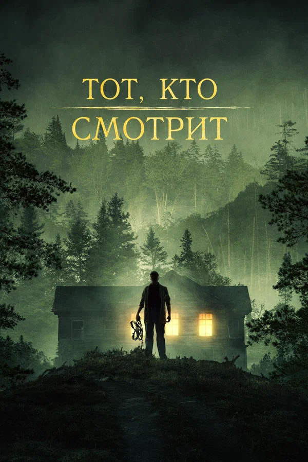

Новинки 2024 года
| Жанр: | триллер |
| Дата выхода: | 2024 |
| Режиссёр: | Адам Ньюачек |
| Продолжительность: | 79 мин. / 01:19 |
| Премьера в мире: | 14 февраля 2024 |
| Сценарий: | Холли Кенни |
| Продюсер: | Кайл Ньюачек, Рэм Пол Силби |
| Композитор: | Дэнни Веббер |
| Художник: | Марго Граседа, Кассандра Ревер |
Жанр хоррора, конечно, чаще всего прошит условностью и рассчитан на эмоционально возбудимого зрителя: у него сложился устойчивый круг ценителей изысканного нервов щекотанья. Лучшие образцы психологического ужастика дали нам такие мастера, как Альфред Хичкок, Джон Карпентер, Роман Полански в "Отвращении", Стэнли Кубрик в эталонном хорроре "Сияние". Их фильмы заложили в фундамент жанра приемы, вошедшие в хрестоматии, они стали штампами, на искушенного зрителя действующими на уровне условных рефлексов. В картине Ньюачека есть все эти элементы: на стол подают тошнотворного вида зайца; нервически возбужденная героиня чувствует затаившуюся опасность, но отважно идет в пасть дьяволу, и все действо сопровождается попсовыми песенками, сама беззаботность которых кажется угрожающей. Мне, субъективно, недоставало здесь как раз психологических обоснований поведения героев, то необъяснимо беспечных, то агрессивных, то преувеличенно бдительных, то не замечающих очевидного. Но в клубе ценителей хорроров все это не имеет решающего значения: там с восторгом реагируют на позывные любимого жанра, хотя со стороны они выглядят наскучившими стереотипами.